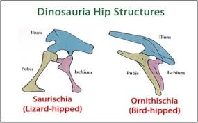

Welcome Dinosaurs
Welcome to the land of the big and mighty. Where massive creatures roamed the earth long before you and I. This is an adventure of a lifetime so please join me on this journey into the life of dinosaurs.
A Breif history
Dinosaurs roamed the earth over 200 million years ago and are one of the biggest creatures that ever lived! They were first discovered arond the 1840 by paleontologist. The word Dinosaur roughly means"big lizzard" and it is also a term used to describe the speices of animals called the Archosaurs(think old big birds and lizzards). "Dinosaurs" not only refer to the species but it also refers to the ecosystem in which they lived. They were the early ancestors of modern day reptiles and bids, paleontologist noticed that the hips on the dinosaurs were different compared to modern reptiles and they were also found next to eggs ,footprints ,nests ,etc. They lived in three main periods: the Triassic, Jurassic, and Cretaceous periods. People often think that Dinosaurs lived in the same time as each other for instance the pterodactyl was alive during the late jurassic but the velociraptor lived during the cretaceous.

Fun Fact: One of the rarest dinosaurs is the berthasaura leopoldinae. It is a toothless dinosaurs found in Brazil other rare dinos include:
- Bambiraptor
- Suzhousaurus
- Kulindadromeus
- Elaphrosaur
Note: there isn't technically one super rare species, hoever I found ones that were either super hard to find or Had unique qualities!
Ancient Giants
Now that you have a bater understanding of what dinos were lets talk about why they were important. I know we just went through a big chunk about what dinos were and you had to read all those paragraphs(sorry by the way) but it was important to establish what dinosaurs were as a species, so I could then explaine in greater detial about the different types and what cool things they could do. Now lets get into the type of dinosaurs. There are around 700 species of dinosaurs that have been desicoverd so far and to keep up with them scientist have split them into 3 main groups: theropods, Sauropods, and Ornithischians.
Theropods
Were the more modern version of the saurischian or "lizzard hipped"(think T-rex) they walked on 2 feet. They were mostly carivorous with webbed feet and hollow bones. Theropods also had smaller more bird like creatres and are the ancient relatives of modern birds, it is also why they have a similar feet structure to them. The main difference is the moder birds aren't known for there teeth(but there are really big birds like the Ostrich). These were some of the best hunter of their era.
Sauropods
These were also ancestors of the saurischian but sauropods walked on 4 legs instead of 2. The are also known for the long necks and mostly leafy diet(like the brachiosaurus). These leafy giants would tower over most animals behaving almost like elephants. They are known for their signiture small heads and large bodies. This species lived over 140 million years. The average sauropod would have weighed about 100 tons or about 10 small cars.
Ornithischians
These were also plant-eating animales and unlike the previous 2 these are considered to have "Bird Hipped" . This names can be a little misleading since ornithischians are animals like the triceratops and they are NOT related to birds. They are only called that because of the way the pubic bone pointed down towards the tail. The animals use their horns or scaled backs to defend themselves against creatures like the theropods.
A New Beginning
Phew! we are finally done and I bet this was a very incsightful learnig experience. Now I ask you to join me for a little longer while we take an exciting adventure into the past! But before we go I want to ask you which type of dinosaurs you want to be? Now it doesn't have to be a super rare one but I want you to think back to what we learned and pick which one would best suit you on this long journey.